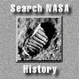
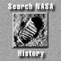

|
Updated February 13, 2006 Steve Garber, NASA History Web Curator For further information E-mail histinfo@hq.nasa.gov |  |
|
Apollo
Expeditions to the Moon Edited By EDGAR M. CORTRIGHT Table of Contents
Scientific and Technical Information Office | National Aeronautics and Space Administration Washington, DC SP-350, Published 1975 |
|
|
Updated February 13, 2006 Steve Garber, NASA History Web Curator For further information E-mail histinfo@hq.nasa.gov |  |